ASSIGNMENTS
Spatial AR landscape where you could control the flow of water
It used projectors on a multi-levelled surface, with touchpoints that triggered interaction. You could use small sandbags to block the flow of water or little triangle shapes to make the water flow where you needed it to. You could make large bodies of water or small ones. By taking the triangle shapes out of their places you could make the flow of water stop all together.
I guess the goal of this exhibition was to show how you can control the flow of water and manipulate environments. Since parts of the environment were more elevated than others, you really had to think about how the flow of water would affect the situation. It reminded me of the exhibition in Linz where you could manipulate the surface of a field and the projectors would change colours accordingly to the elevation of the surface.
I didn’t know at the time that I was going to pick this installation to be my favourite so I didn’t really take photos/videos to illustrate the functionalities, but I do have a selfie with it, but it was just a video feed projected onto a multi-levelled surface with some sensors. At the time I didn’t really look into how it worked, I just had fun with it and I can’t find it online either. Most of the other exhibitions are featured on the museum NEMO’s site, but not this one, unfortunately.
I loved this project the most because I love working with a physical interactive space that you can alter and make your own, but most importantly, just have fun with it. A lot of people’s favourite was the huge logistics machine, but I don’t like filling out orders or having to do what I’m told, I like to make it my own and in this case you could alter an entire landscape into what you wanted it to.
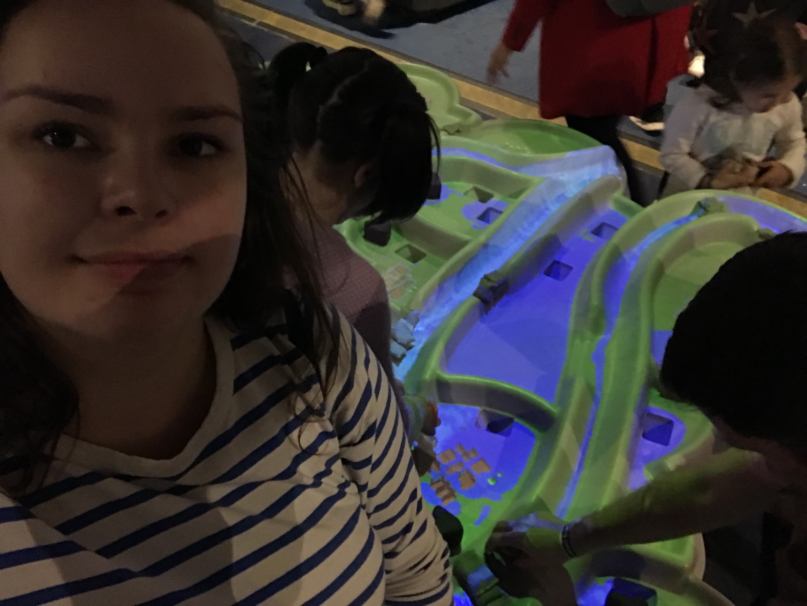OTHER PICTURES
Dildos we made feat. Armandas and Pien (Don't worry they were gone in less than 3min)
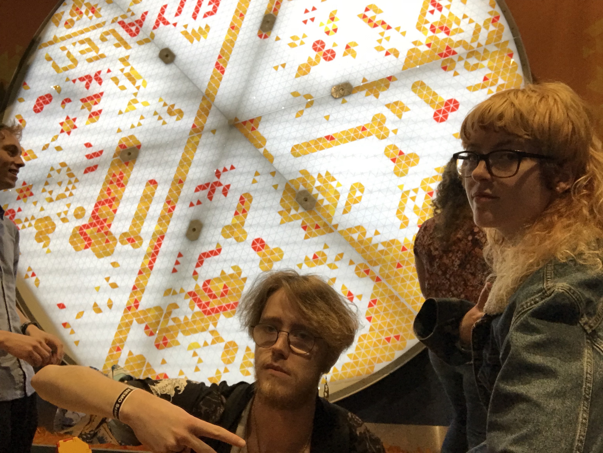 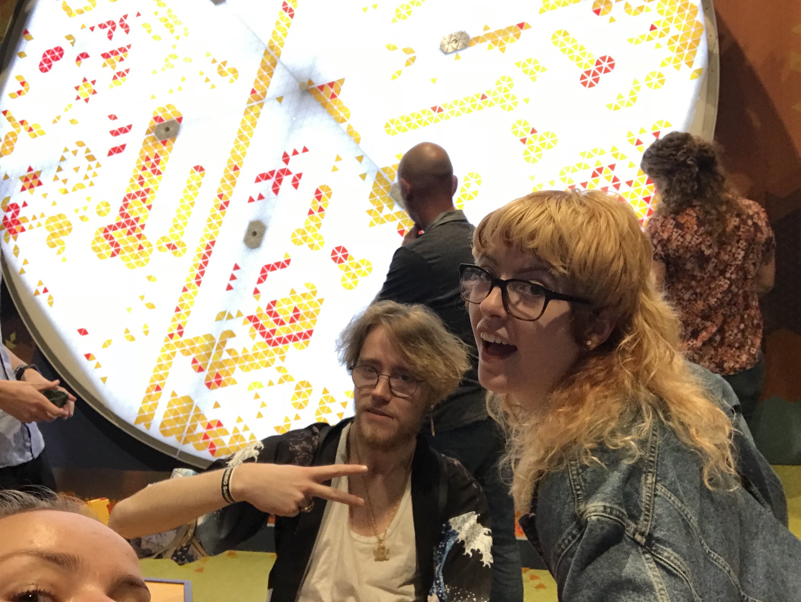Some LEGO type thing (I spent half an hour looking for the right pieces for this)
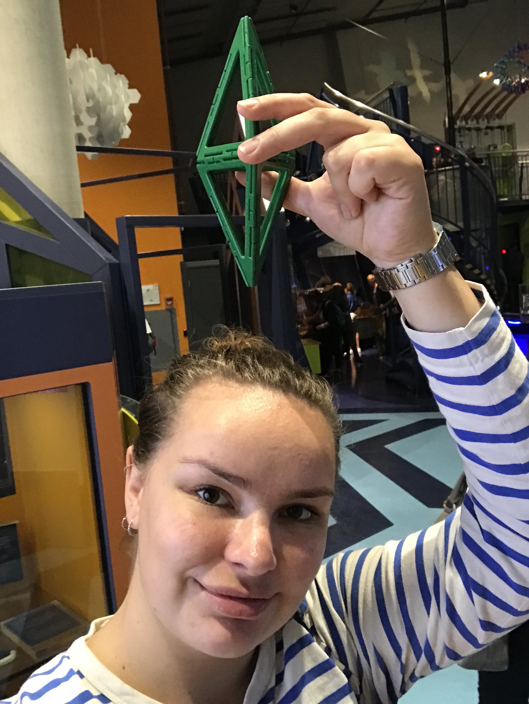Spatial AR
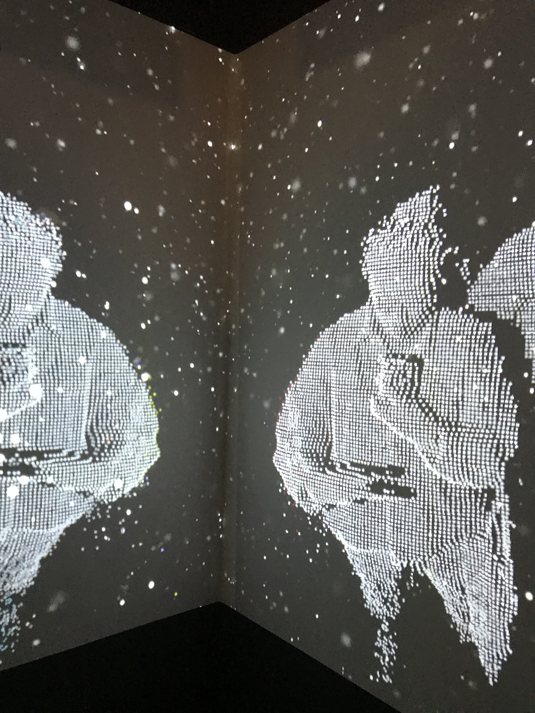The huge Logistics game feat. Pablo and Lukasz and some kid
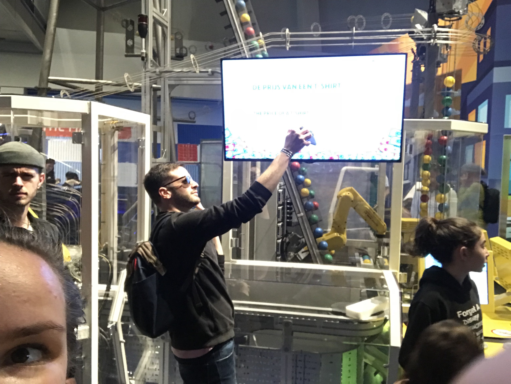Big bubbles
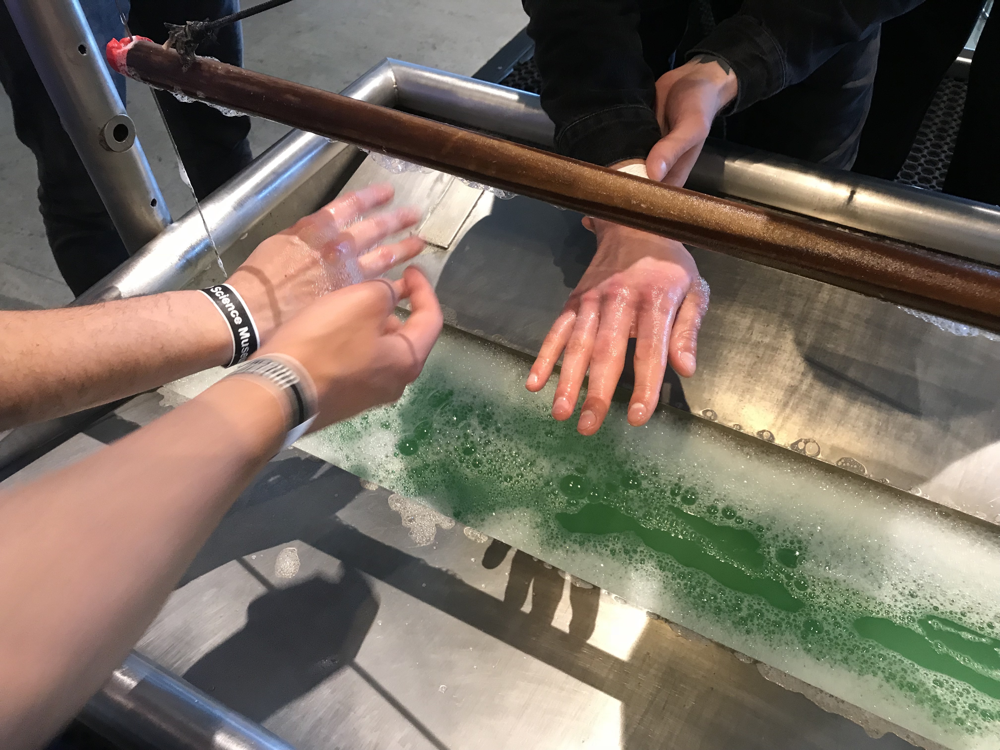Magnetic liquid
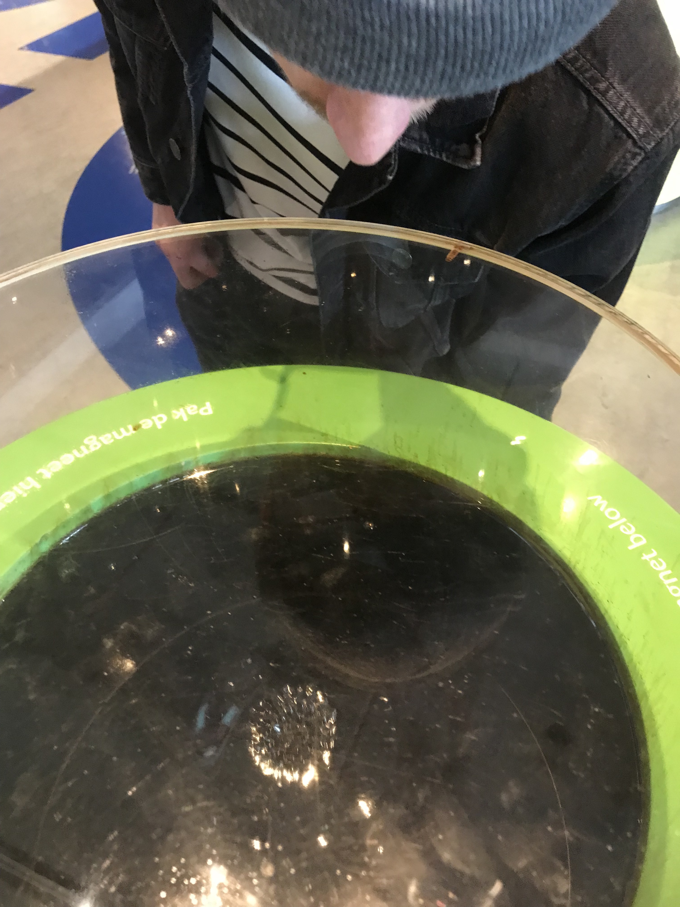Water tornado
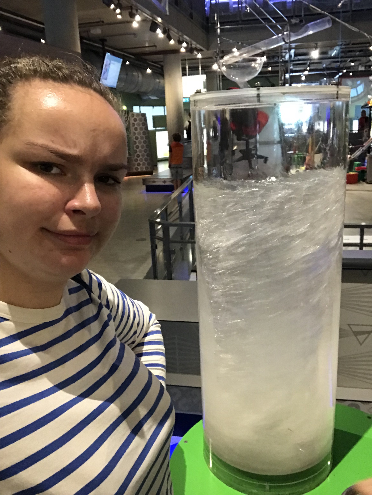Building a dam in water
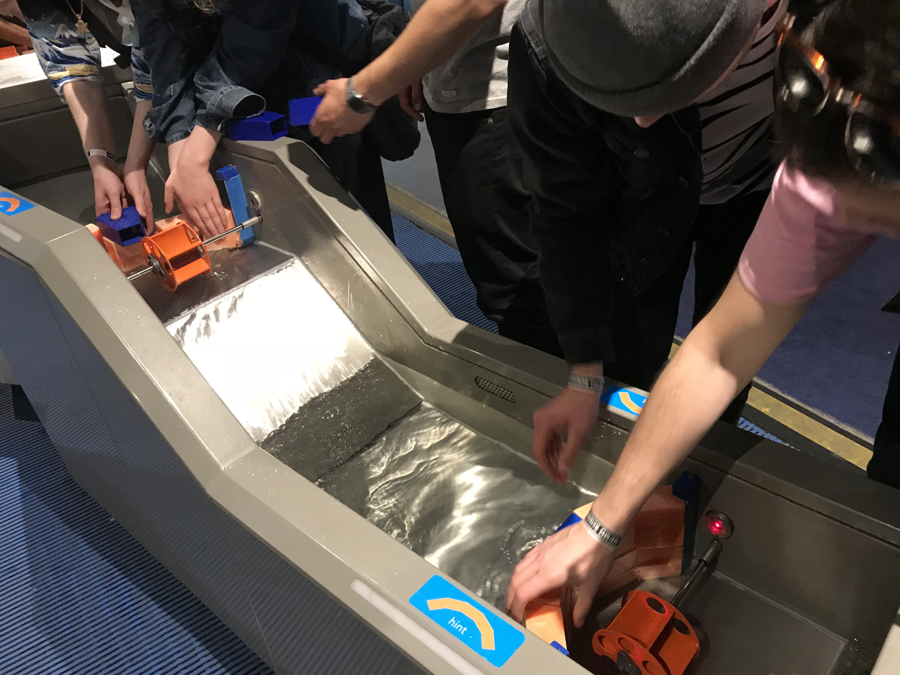Huge replica of Erasmusbrug
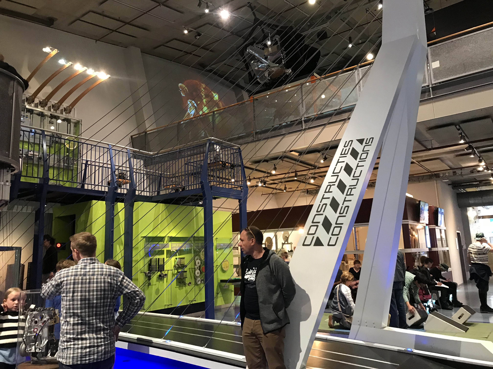Drugged out spiders
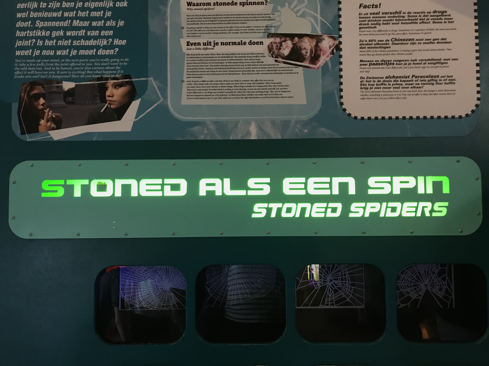